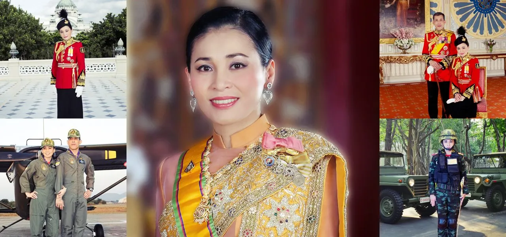

Présentation
Suthida Tidjai est née le 3 juin 1978 à Hat Yai, dans la province de Songkhla. Elle est reine de Thaïlande depuis son mariage avec le roi Maha Vajiralongkorn (Rama X) le 1er mai 2019.
Chronologie
-
Naissance
Naissance à Hat Yai
-
Diplôme universitaire
obtention d'un diplôme en communication à l'unversité d'Assumption
-
à
Carrière dans l'aviation civile
Elle commence à travailler en tant qu'hotesse de l'air, d'abord pour Japan Airways puis pour Thai Airways
-
Début de sa carrière militaire
Elle exerce des fonctions opérationnelles au sein de la Garde royale
-
Formation militaire
Elle achève une formation destinée aux officiers
-
Evolution militaire et aéronautique
Elle occupe des fonctions de commandant et suit une formation en aéronautique
-
Formation d'état major militaire
elle obtient son diplome de la 91ème promotion du Collège de l'état major de l'armée de terre thailandaise
-
Hautes responsabilités militaires
Elle est nommée vice-cheffe du departement des aides de camp royaux et vice-commandante du commandement de securité royale
-
Mariage royal
Elle épouse le roi Maha Vajiralongkorn et reçoit le titre de reine Suthida
-
Couronnement royal
Lors de la cérémonie de couronnement du roi, son titre royal est confirmé sous le nom de reine Suthida Bajrasudhabimalalakshana
-
Queen Pilot
Après une formation spécialisée sur le chasseur Gripen, elle réalise son premier vol en solo le 8 Octobre 2026 marquant une nouvelle étape de son parcours aéronautique